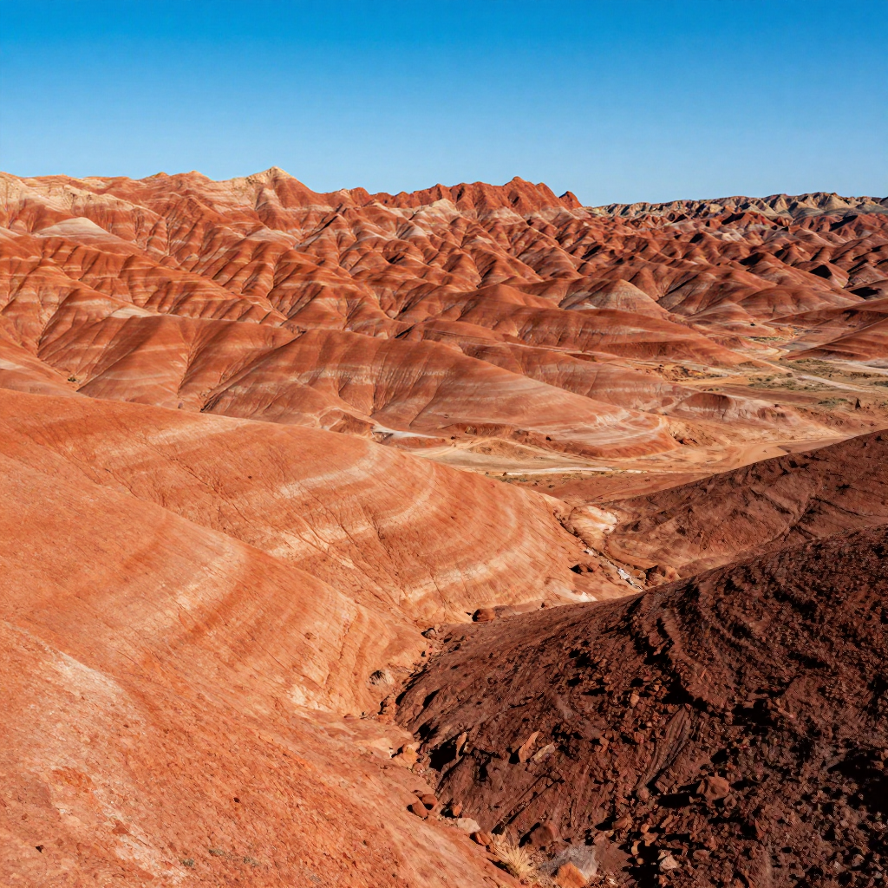
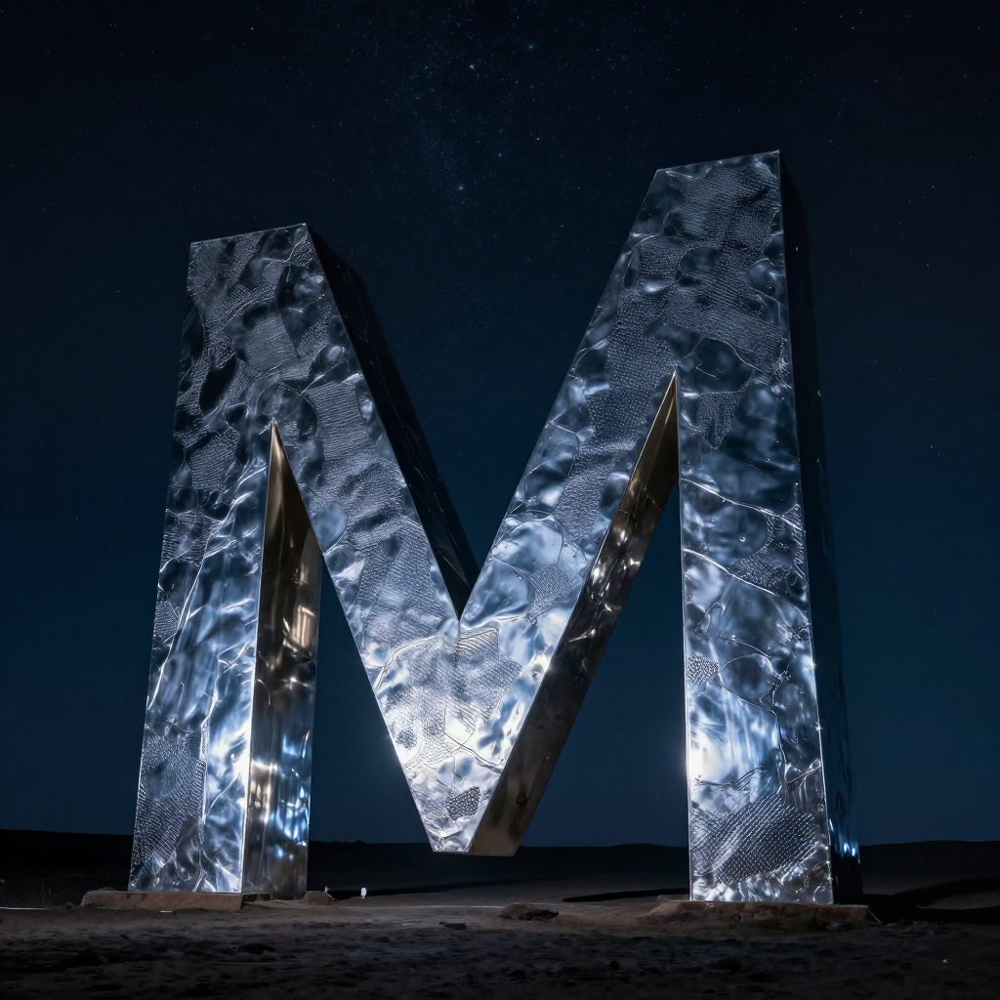

The Mysterious Monoliths: Metal Pillars from Nowhere

A triangular metal monolith discovered in the Utah desert in November 2020.
In late 2020, a bizarre mystery captured the world's attention. Shiny metal monoliths began appearing in remote locations across the globe - and disappearing just as mysteriously. Were they art installations, elaborate pranks, or something more otherworldly?
The Utah Discovery
On November 18, 2020, a helicopter crew from the Utah Department of Public Safety was counting bighorn sheep from the air when they spotted something highly unusual in the red rock desert. A triangular metal pillar, approximately 10-12 feet tall, stood gleaming in a remote canyon.

The remote Utah canyon where the first monolith was discovered.
🛸 2001: A Space Odyssey Connection
The monoliths immediately drew comparisons to the mysterious alien artifacts from Stanley Kubrick's film, sparking wild speculation about their origin.
A Global Phenomenon
Once the Utah monolith made international news, similar structures began appearing worldwide. Within weeks, monoliths were reported in Romania, California, Nevada, Pennsylvania, the Netherlands, Morocco, and even the Isle of Wight.
🗺️ Worldwide Appearances
By early 2021, over 100 monoliths had been reported across 30+ countries. Most were quickly removed or disappeared under mysterious circumstances.
The Disappearances
Perhaps even stranger than the appearances were the disappearances. The original Utah monolith vanished just days after its discovery. Witnesses reported seeing four men remove it on November 27, 2020. The Romania monolith also disappeared within days, only to be replaced briefly by a smaller, rusty version.

Many monoliths appeared and disappeared under cover of darkness.
👀 The 'Monolith Makers'
Several art collectives and individuals claimed responsibility for various monoliths, but the true origins of many remain unknown.
Art, Prank, or Mystery?
The most likely explanation is that the monoliths were created by artists and pranksters inspired by the initial discovery. However, the speed at which copycats appeared worldwide, the remote locations chosen, and the coordinated disappearances have fueled ongoing speculation.
🎨 The Most Famous Claim
Some monoliths were definitively linked to an anonymous art collective, but the original Utah monolith's creator has never been officially identified.
The monolith phenomenon of 2020-2021 remains one of the most unusual viral mysteries of recent years. Whether art, prank, or something stranger, they captured the world's imagination during a time when people desperately needed wonder and mystery.
Clear Summary of the Evidence
The Mysterious Monoliths: Metal Pillars from Nowhere can sound dramatic, but the best way to understand it is to separate strong evidence from speculation. This article focuses on documented facts, source quality, and clear historical context.
In simple terms, this topic matters because it connects three ideas: what happened, how we know, and what remains uncertain. The core story in The Mysterious Monoliths: Metal Pillars from Nowhere is easier to follow when we use a timeline, define key terms, and point directly to sources.
In late 2020, a bizarre mystery captured the world's attention. Shiny metal monoliths began appearing in remote locations across the globe - and disappearing just as mysteriously. Were they art installations, elaborate pranks, or something more otherworldly?
Background Timeline (What Happened, Step by Step)
- In late 2020, a bizarre mystery captured the world's attention.
- On November 18, 2020, a helicopter crew from the Utah Department of Public Safety was counting bighorn sheep from the air when they spotted something highly unusual in the red rock desert.
- By early 2021, over 100 monoliths had been reported across 30+ countries.
- Witnesses reported seeing four men remove it on November 27, 2020.
- The monolith phenomenon of 2020-2021 remains one of the most unusual viral mysteries of recent years.
This timeline view clarifies the sequence of events and helps test whether later claims fit documented records.
What We Know with Strong Support
Across discussions of The Mysterious Monoliths: Metal Pillars from Nowhere, several points are consistently supported by records or repeatable analysis:
- Shiny metal monoliths began appearing in remote locations across the globe - and disappearing just as mysteriously.
- Were they art installations, elaborate pranks, or something more otherworldly?
- On November 18, 2020, a helicopter crew from the Utah Department of Public Safety was counting bighorn sheep from the air when they spotted something highly unusual in the red rock desert.
- A triangular metal pillar, approximately 10-12 feet tall, stood gleaming in a remote canyon.
These claims are stronger because they can be checked independently, rather than depending on one dramatic story or one unverified source.
How Researchers Study This Topic
Good history is a method, not just a story. When experts examine The Mysterious Monoliths: Metal Pillars from Nowhere, they usually combine source criticism, technical analysis, and contextual comparison.
- Researchers collect instrument data first, then compare eyewitness reports with weather, aviation, and technical records.
- Investigators try to rule out ordinary explanations before considering rare or unusual hypotheses.
- Independent replication matters: a claim is stronger when separate teams can observe or verify similar patterns.
Strong analysis starts by checking whether a claim is supported by verifiable evidence and independent review.
What Experts Still Debate
Even with good evidence, not every question has a final answer. In The Mysterious Monoliths: Metal Pillars from Nowhere, debates often continue because the surviving data is incomplete, damaged, or interpreted in different ways.
One common source of confusion is mixing the topics of The Utah Discovery, A Global Phenomenon, and The Disappearances as if they prove the same thing. In reality, each part of the story may require different standards of proof.
A balanced approach is to keep uncertainty visible: we can confidently state what records show today, while leaving room for future evidence to update the picture.
Myths vs. Evidence
Myth: If a topic is mysterious, experts have no idea what happened.
Evidence-based view: Usually, experts know many parts of the story; the debate is about specific details.
Myth: The most dramatic explanation is probably true.
Evidence-based view: The best explanation is the one that matches the most verifiable facts with the fewest assumptions.
Myth: New claims automatically replace old research.
Evidence-based view: New claims become accepted only after careful checks, replication, and critical review.
Why This Story Still Matters Today
The Mysterious Monoliths: Metal Pillars from Nowhere is not only a curiosity from the past. It also provides a well-documented case for comparing primary records, later interpretations, and unresolved evidence questions.
This matters because careful source-checking reduces misinformation and keeps historical interpretation anchored to evidence.
Mini Glossary (Plain Language)
- Primary source: A record made close to the event, like a report, letter, inscription, or official document.
- Secondary source: A later explanation that interprets primary evidence.
- Hypothesis: A proposed explanation that must be tested against evidence.
- Consensus: The view most experts currently support, knowing it can change with new data.
- Instrument data: Measurements from devices such as cameras, radar, or sensors.
- False positive: A result that looks meaningful but is caused by error or misidentification.
Quick Recap
If you remember only three things about The Mysterious Monoliths: Metal Pillars from Nowhere, keep these: (1) there is real evidence worth studying, (2) some questions remain open, and (3) careful source-checking is the best path to reliable understanding.
That balance of curiosity and caution helps separate durable historical findings from speculation.
Extended Context for Deeper Reading
When we revisit The Mysterious Monoliths: Metal Pillars from Nowhere with patience, the most useful progress comes from careful comparison: early reports versus later analysis, confident claims versus documented limits, and popular retellings versus primary evidence. This method yields a clearer map of established findings and unresolved questions.
When we revisit The Mysterious Monoliths: Metal Pillars from Nowhere with patience, the most useful progress comes from careful comparison: early reports versus later analysis, confident claims versus documented limits, and popular retellings versus primary evidence. This method yields a clearer map of established findings and unresolved questions.
Evidence Framework
For The Mysterious Monoliths: Metal Pillars from Nowhere, a practical framework is to separate established facts, supporting evidence, and unresolved questions before drawing conclusions.
This framework prevents overconfidence, keeps interpretation consistent, and makes it easier to distinguish documentation from storytelling style.
Another reason this topic remains valuable is that it shows how knowledge improves over time. Early reports on The Mysterious Monoliths: Metal Pillars from Nowhere often reflect limited tools and local assumptions. Later researchers can test those claims with stronger methods, broader comparison sets, and more transparent standards. The result is not always a single final answer, but usually a more accurate map of what is known and what remains open.
References & Further Reading
Editorial note: We cross-check claims across multiple independent sources. See our Editorial Policy.